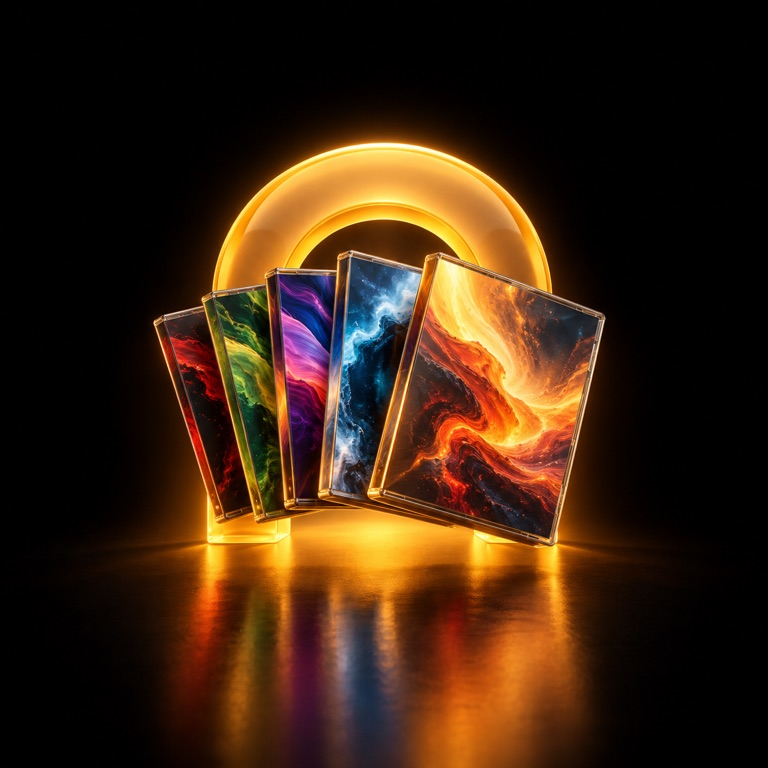

Archway
Archway

Your library, in a real Mac app.
Installed games sit up front, everything else you own on Steam waits below. Pick one, press Install, then Play. Steam’s window shows up once, to sign in, and stays out of sight after that.

Nothing to configure first.
Wine, Windows Steam and Apple’s D3DMetal arrive on their own. Archway picks the settings for games it knows, and marks the rest as untested so you can try them anyway.
What happens on first start
A short introduction runs while Archway gets ready. It takes a few minutes, once.
- Checks for RosettaGames are built for Intel chips; Rosetta translates them.
- Downloads its runtimeAbout 145 MB, with the checksum verified.
- Creates a Windows environmentA self-contained bottle in Application Support.
- Installs Windows SteamSilently, so you only see it to sign in.
Early, and honest about it
Works today
- Brick by Brick: Tidy Up the Small Town! is tested end to end
- Other Steam games can be tried, marked as untested
- Your own .exe files from your Mac
- Remove Archway deletes its data, bottles and games
Not the goal
- Every Windows game, especially big AAA titles
- Games that need kernel anti-cheat
- Being a store or replacing Steam
- Intel Macs
Install less. Play more.
Archway never asks for your Steam password. You sign in on Steam’s own pages.
Download for Mac Or build it yourself from the source on GitHub.